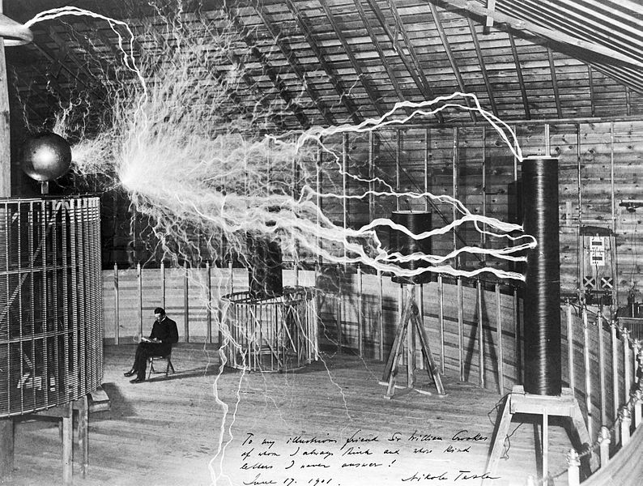

Никола Тесла родился 9 июля 1856 года в Смиляне, деревне в сельской Хорватии, входившей тогда в состав Австро-Венгерской империи. Он был сыном сербского православного священника, известного проповедника, и умной и изобретательной, хотя и необразованной матери. Тесла был вторым сыном в семье из двух мальчиков и трех девочек.
Тесла рос ребенком с острым воображением, свободно владея шестью языками и развивая в себе интерес к механическим приспособлениям. Вундеркинд в науке, он был предназначен для семейных занятий священнослужителей или военных, но во время
детской болезни он смог получить разрешение заниматься наукой. Он описал свои авантюрные фантазии как нечто большее, чем просто сны; вместо этого они были очень детализированными визуализациями с добавлением некоторой доли интуиции.
В возрасте от 10 до 14 лет Тесла посещал школу в городе Госпич, окончив её блестящим учеником. В течение следующих трех лет в колледже в Карлштадте Тесла открыл свою страсть всей жизни: науку об электричестве. Его объявлению об этом выборе воспротивились родители, но решение было отложено. Он был опасно болен и ограничен в течение года, и когда он выздоровел, его отец позволил инженерным амбициям своего сына развиваться дальше.
Тяжелый путь к великому открытию
В 1875 году Тесла начал изучать электротехнику в Политехническом институте в Граце, Австрия. В Граце Тесла смог наблюдать новую машину грамма, которая производила электричество постоянного тока с помощью электромагнитов, а также могла быть реверсирована, чтобы работать как электрический двигатель. Демонстрация посеяла идею в мозгу Теслы. Почему нужно было идти на такие меры, чтобы преобразовать переменный ток, производимый динамо-машиной, в постоянный ток? Почему бы не оставить ток переменного тока и не запустить двигатель таким образом?
Тесла продолжил изучать электричество в Пражском университете и, не имея средств, через год ушел на незначительную должность в недавно созданном венгерском телеграфе в Будапеште. Признание его способностей пришло быстро, и в 1881 году
он был назначен управляющим телефонной компанией и с присущим ему энтузиазмом работал, изобретал и начал свою лавину открытий.
Решение загадки пришло к нему в драматической форме в феврале 1882 года. Во время прогулки с другом на закате солнца, он стоял как завороженный, объясняя, как будет работать двигатель переменного тока. Видение, которое он изложил в мельчайших деталях, возникло спонтанно в ответ на вопросы, которые он задал себе еще в 1875 году. Позже Тесла описал свои способности к визуализации на примере того, как он представлял себе дизайн в мельчайших деталях, а затем возвращался к сохраненному изображению через несколько дней или недель и мог проверить его на износ, как если бы он работал в течение промежуточного периода.
Никола Тесла в лаборатории в Колорадо-Спрингс
В Париже Тесла был направлен на должность младшего инженера в Compagnie Continental Edison, филиал американской компании, созданной для расширения генераторов постоянного тока и систем освещения Эдисона. Тесла продолжал быть странным, фобическим персонажем и с энтузиазмом говорить о своей системе переменного тока. Он получал мало внимания от коллег, которые были слишком заняты расширением системы постоянного тока. Компания ошеломила публику, освещая Парижскую электрическую выставку 1881 года, и устанавливала генераторы для освещения ограниченных зон, таких как заводы. Однако радиус передачи в одну милю для практической передачи постоянного тока ограничивал продажи более крупным установкам, таким как города и поселки.
В течение долгого времени ожидания Тесла смог превратить свои мечты в реальность. В арендованном механическом цехе он построил прочную версию динамо-машины, которую сохранил в своем воображении в течение прошлого года. Модель работала прекрасно. По возвращении в Париж Тесла планировал собрать свой страсбургский бонус для стартовых фондов и найти французских финансовых спонсоров, когда он построит свои новые генераторы переменного тока и двигатели.
Но менеджеры Эдисона посоветовали Тесле взять свои мечты и планы и опробовать их в Америке. 28-летний молодой человек, который учился, работал и путешествовал по большей части Центральной Европы, отправился в Соединенные Штаты.
В апреле 1887 года в Южном Манхэттене родилась компания Tesla Electric Company, и Тесла, наконец, получил возможность построить—в реальности—все электрические системы, от генераторов через трансформаторы до двигателей, которые были в его зрительной памяти с того дня в Будапеште.
Инженерное братство начало замечать Теслу, и 16 мая 1888 года его убедили обратиться в Американский институт инженеров-электриков. Описание Теслой теории и реализации его изобретений было встречено как шедевр; его гениальность наконец-то
была признана.
Жизнь после успеха
Тесла был теперь публичным героем, прославленным повсюду, но все еще одержимым своей жаждой познания всего электрического. Он отвечал на многочисленные приглашения изысканной едой для своих гостей, а затем лабораторным шоу всех видов завораживающих, светящихся, искрящихся и вращающихся предметов, приводимых в движение электричеством. Изюминкой была демонстрация, в которой он пропускал электрический ток через свое тело с головы до ног, сначала определив оптимальную частоту и мощность, а затем производя эти условия с помощью своих высокочастотных динамо-машин и катушечных трансформаторов.
В конце концов, приняв европейские приглашения, Тесла провел свою поучительную лекцию и демонстрацию удивительных электрических экспериментов на дороге. Всего за восемь лет после отъезда из Парижа в Соединенные Штаты Тесла прошел путь
от нищего иммигранта до инженера, от нищего землекопа до международной знаменитости—и все это к 36 годам. Среди новаторских, а затем и широко распространенных изобретений, которые он продемонстрировал, были неоновые и фосфоресцирующие
лампы, электронные трубки для приема беспроводных сигналов и принципы настройки катушек, используемые в радиоприемниках.
Поздние года жизни
Осенью 1937 года в Нью-Йорке 81-летний Тесла вышел из отеля «Нью-Йоркер», чтобы, как обычно, покормить голубей у собора и библиотеки. Переходя улицу в паре кварталов от отеля, Тесла не смог увернуться от движущегося такси и упал, получив
травму спины и перелом трёх рёбер. Тесла отказался от услуг врача, но так полностью не оправился. Происшествие вызвало острое воспаление лёгких, перешедшее в хроническую форму. Тесла оказался на несколько месяцев прикован к постели
и смог снова встать в начале 1938 года.
Никола Тесла скончался в занимаемом им номере отеля «Нью-Йоркер» в ночь с 7 на 8 января 1943 года, на 87-м году жизни. Тело кремировали, и урну с прахом установили на Фернклиффском кладбище в Нью-Йорке. В 1957 году она перенесена в
Музей Николы Теслы в Белграде.